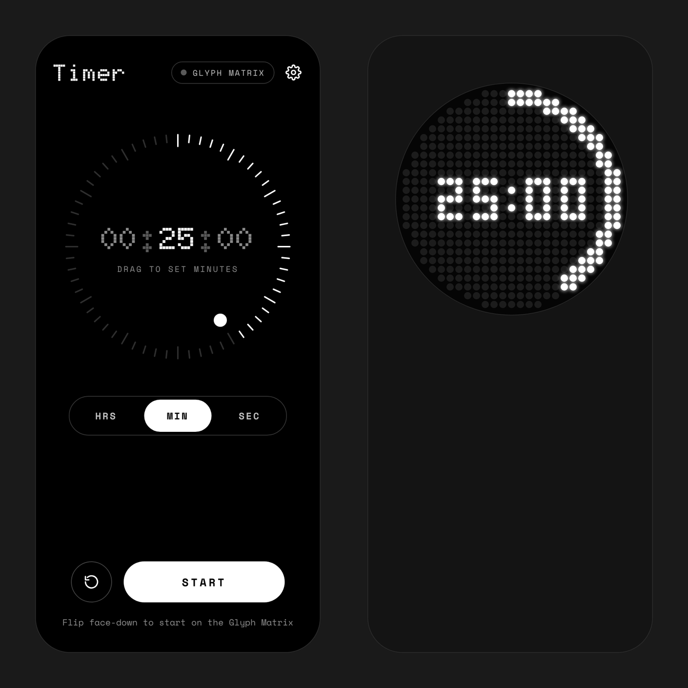
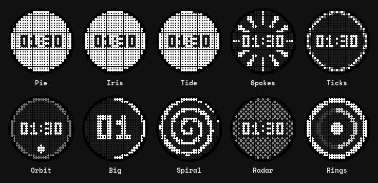
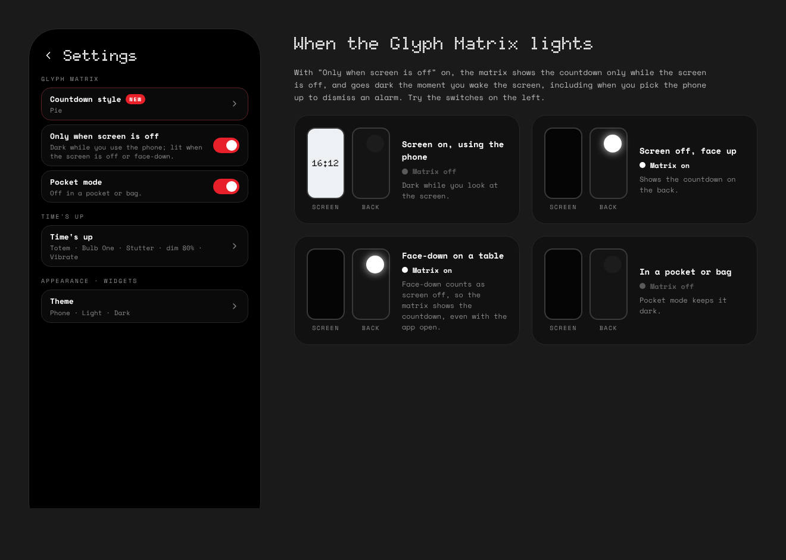
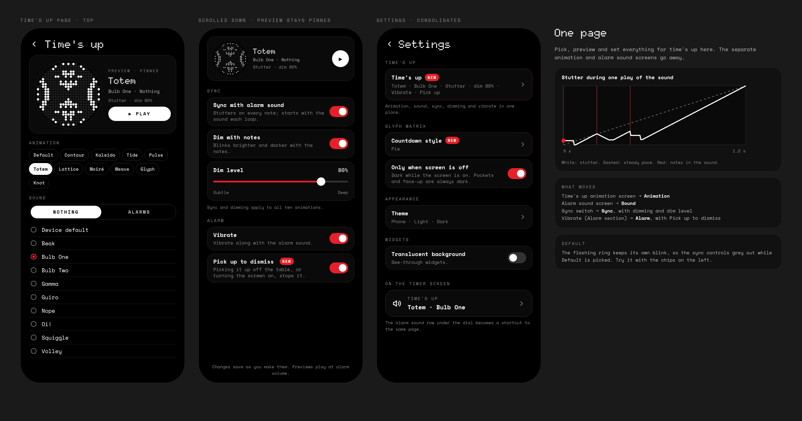
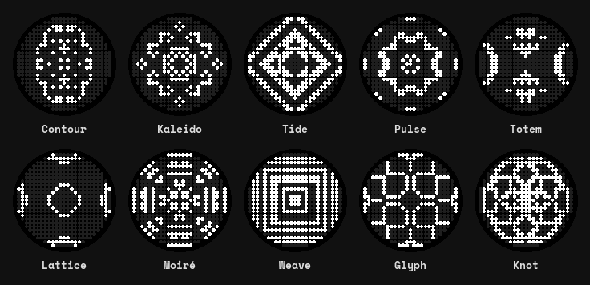
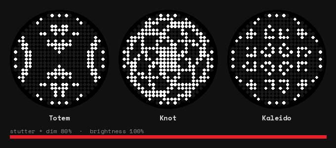
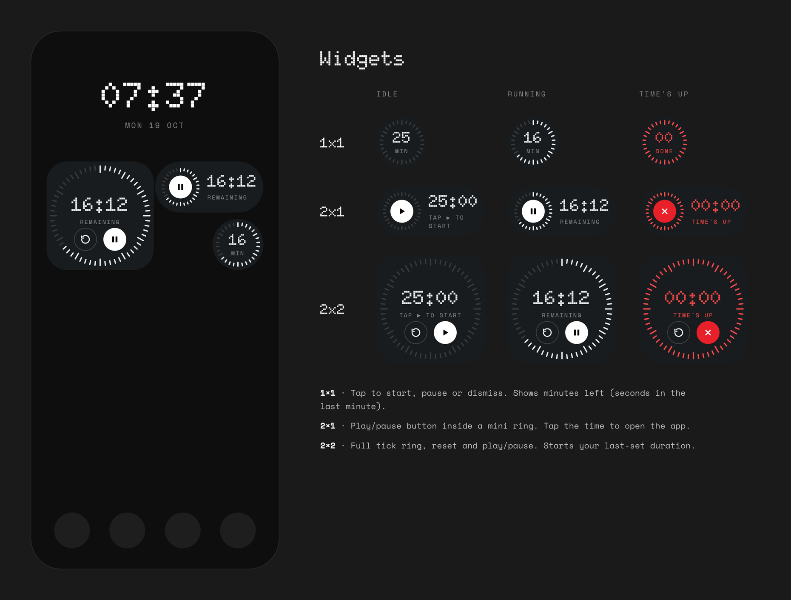
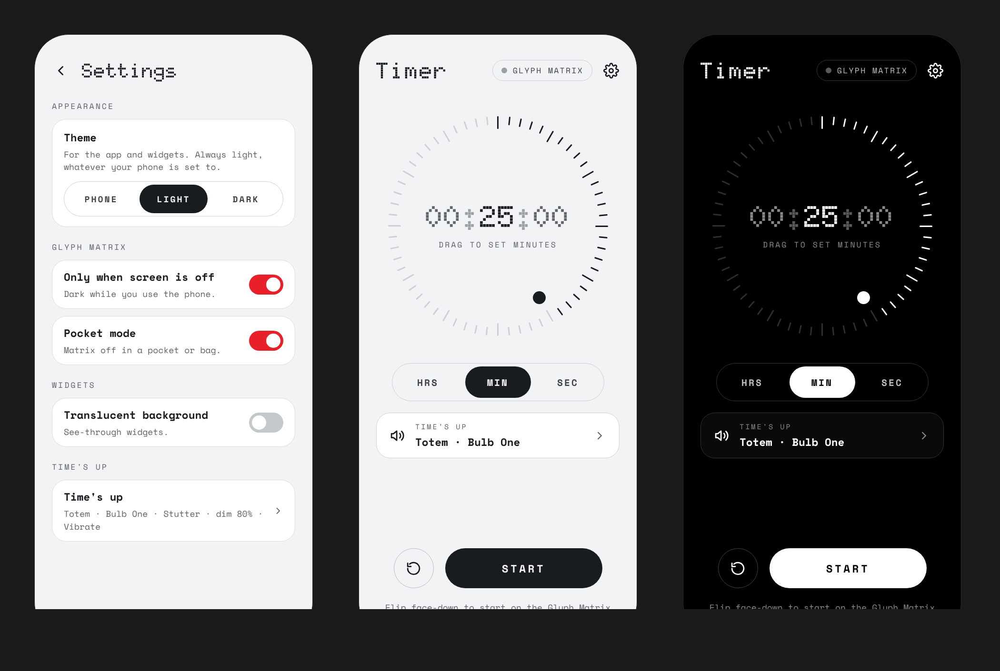
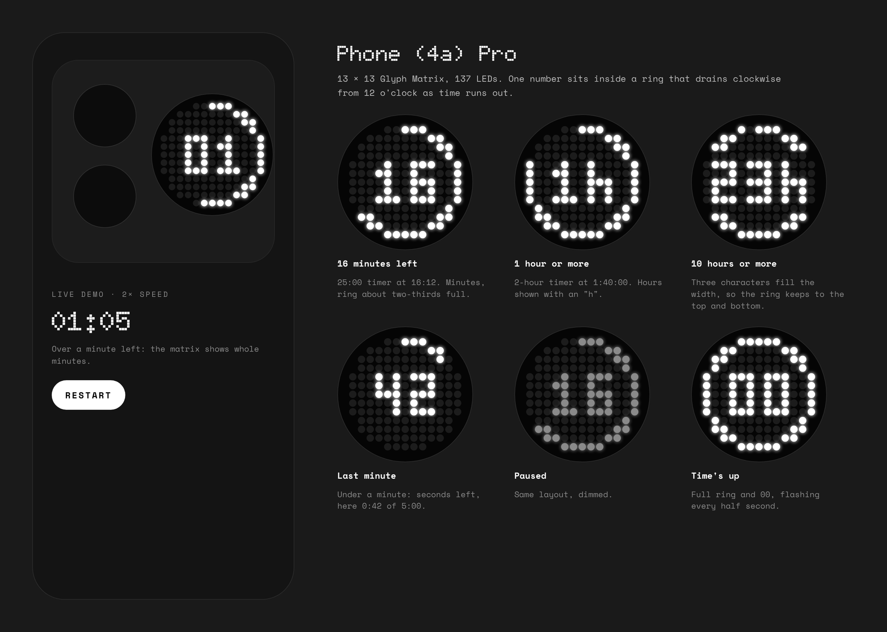

Glyph Countdown
A countdown timer for the Nothing Phone (3) and Phone (4a) Pro that shows the time left on the Glyph Matrix. Flip the phone face down to start it. Pick it up to stop the alarm.
Free and open source. Android 13 or newer. On other phones the timer, sounds and widgets still work, without the Glyph Matrix. An unofficial app, not made by Nothing.
How it works
No buttons to hunt for on the back. The phone's own sensors do the work: where it's lying, which way up, and whether you've picked it up.
Set the time
Drag the dot round the ring of ticks, with a light haptic tick at each step. Hours, minutes or seconds, up to 23 h 59 min 59 s.
Flip it face down
With the app open, lay the phone face down and the timer starts. The matrix lights at once, even with the screen still on.
Watch the back
The time left sits inside a ring that drains clockwise. Close the app and it keeps going, with a live notification.
Time's up
The matrix plays your animation in step with your alarm sound, at alarm volume, for up to 3 minutes.
Pick it up
Lift the phone off the table, or turn its screen on, and the alarm stops. Knocks and the alarm's own vibration don't count.

On the Glyph Matrix
Keep the draining ring, or pick one of ten countdown styles, each with a live preview: Pie, with the numbers cut out of it, Iris, Tide, Spokes, Ticks, Orbit, Big, Spiral, Radar and Rings.
On the Phone (3)'s 25 × 25 matrix it shows H:MM from an hour up, then MM:SS. The Phone (4a) Pro's 13 × 13 matrix shows one number: hours, minutes, or seconds in the last minute.

Lit only where you can see it
There's nothing to set up. The phone works out where it is from its motion and proximity sensors. A table is the only place a phone lies flat and perfectly still, so a pocket is never mistaken for one, even when you're sitting down.
Lit
- Face down on a table, even with the app open
- In your hand with the screen off
- Through the whole alarm, however loud or buzzing
Dark
- While you use the screen (you can switch this off)
- In a pocket or bag, sitting or walking
- Face up on a table, where the matrix faces down

Time's up
Everything that happens when the timer ends is on one page, with a preview pinned at the top that plays your choices together with the real sound.
- Animation: the flashing ring, or one of ten: Contour, Kaleido, Tide, Pulse, Totem, Lattice, Moiré, Weave, Glyph and Knot.
- Sound: your phone's Nothing sounds or its alarm sounds.
- Sync with alarm sound: the animation stutters on every note, snapping back, holding, then carrying on.
- Dim with notes: the matrix blinks with the sound. A slider sets how deep it dims.
- Vibrate along with the sound.
- Pick up to dismiss: lifting the phone off the table, or turning its screen on, stops the alarm. If the alarm starts in your pocket, walking about won't stop it. Take the phone out and wake the screen.



Widgets and themes
Three home screen widgets, shaped like Nothing's own: a circle, a pill and a rounded square. They tick every second while the timer runs, pulse red at time's up, and start the time you last set. A translucent background is an option.
The app and widgets come in light and dark, following the phone or set by hand. On a Nothing phone the app uses the NDot font already on the phone, so it matches the rest of Nothing OS.



Install
- On your phone, open the latest release and download
GlyphCountdown-….apk. - Open it, and allow Install unknown apps when Android asks.
- On first start, allow notifications, so the countdown and alarm can show.
- For widgets, long-press the home screen, then Widgets, then Glyph Countdown.
Updates install over the top and keep your settings. Older versions are on the releases page.
Check a download
Every release is built and signed by GitHub Actions, never on a personal machine, and its notes list the APK's SHA-256. Every official build is signed with this certificate:
SHA-256: a22a650d43425496555e814f387403d5d5b95fe1cd9e70519c030388654439e7Check it with apksigner verify --print-certs. An APK signed with any other certificate isn't an official build.
Private by design
The app has no internet permission, so it can't go online. There's no account, no analytics and no ads. Your settings stay on the phone.
Good to know
- Pressing the Glyph Button opens Nothing's toy carousel, which takes the matrix over. The timer comes back when it closes. Apps can't see Glyph Button presses, so the alarm stops when you pick the phone up or wake the screen instead.
- Flip to start works while the app is open on screen.
- Google Clock's alarm sounds are private to that app, so only sounds installed on the phone are listed.